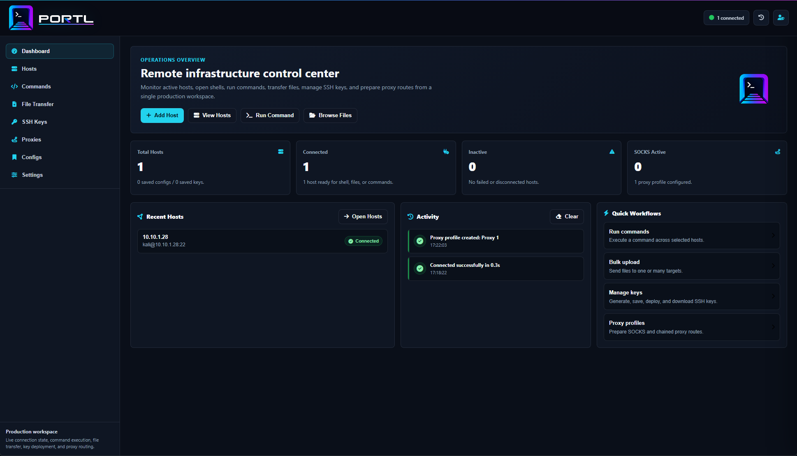
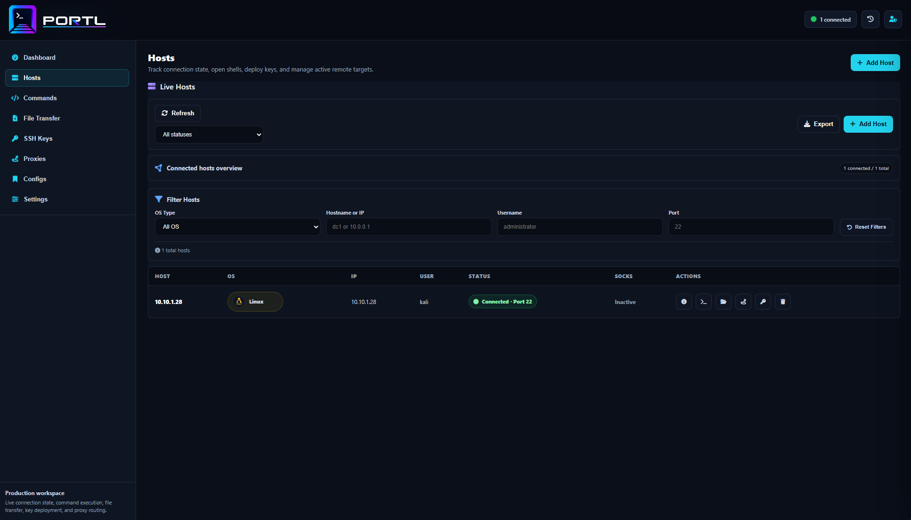
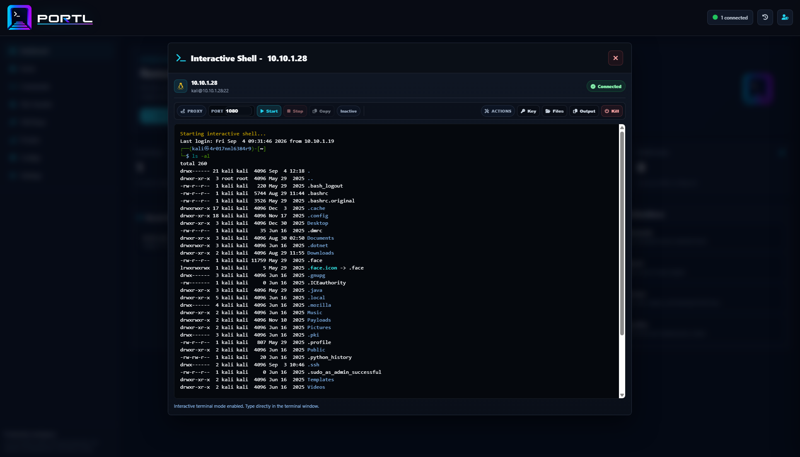
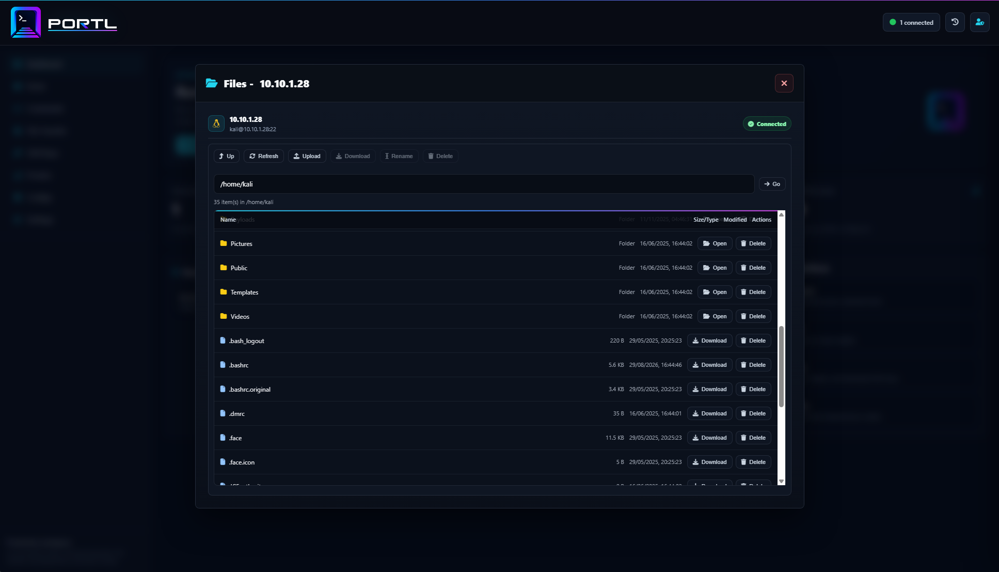
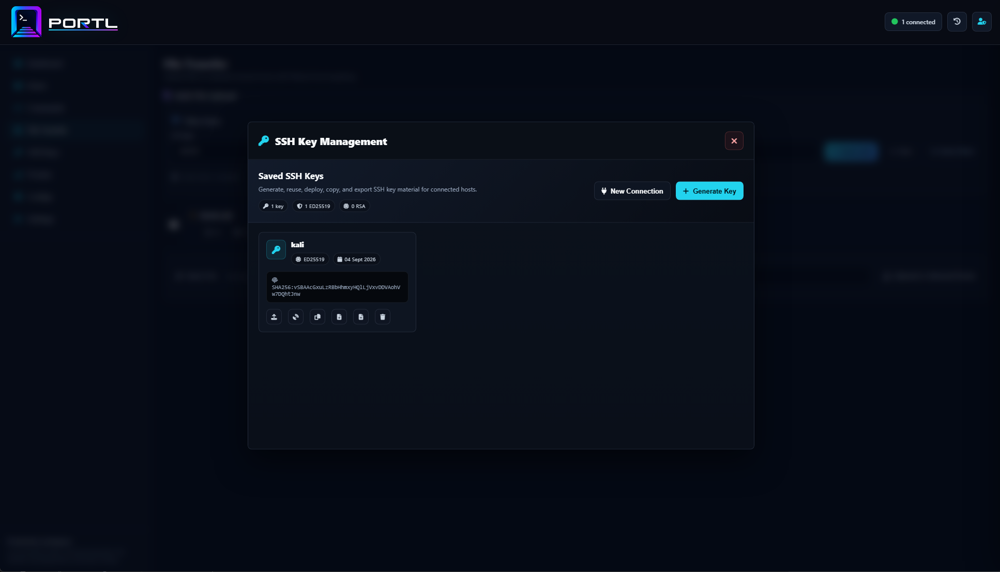

Portl Wiki
Install And Operate Portl
Portl centralises remote operations in one browser-based platform. Deploy SSH keys domain-wide, run commands across multiple hosts, browse remote files, open interactive shells, and manage proxy routes from the same controlled workspace.
Core Operations
- Run one command across multiple selected hosts.
- Distribute SSH keys domain-wide with a one-click workflow.
- Open live browser shell sessions for direct host work.
- Browse and manage remote files without leaving the platform.
- Start, stop, and reuse SOCKS/HTTP proxy profiles.
Requirements
- Docker with Docker Compose v2.
- Python 3 for the launcher.
- Access to
ghcr.io/h0wl3r/portl:latest.
Install
Linux: installs into /srv/portl; sudo is requested automatically when needed.
curl -fsSL https://raw.githubusercontent.com/H0wl3r/portl/main/install.sh | sh && /usr/local/bin/portl startmacOS:
curl -fsSL https://raw.githubusercontent.com/H0wl3r/portl/main/install.sh | sh && portl startWindows PowerShell:
iwr https://raw.githubusercontent.com/H0wl3r/portl/main/install.ps1 -UseB | iex; portl start
The install scripts download portl.py, docker-compose.yml,
and a small portl command wrapper. They do not install Docker,
modify system packages, remove files, or clone the application source.
First Run
portl.py creates .env with generated secrets if the file does not
already exist. It prints the first admin login after creating that file.
Initial Portl login:
Username: admin
Password: generated-per-install-password
Keep .env secure. It contains the install's admin password, session
secret, PostgreSQL password, and data encryption key.
Commands
portl doctor # Check Docker, Compose, .env, and port readiness
portl start # Pull the official image and start Portl
portl stop # Stop and remove the Compose containers
portl restart # Restart the existing containers
portl update # Update launcher, Compose, and image, then restart
portl status # Show Compose container status
portl logs # Follow recent app logsConfiguration
PORTL_IMAGE=ghcr.io/h0wl3r/portl:latest
PORTL_PORT=5000
PORTL_AUTH_USERNAME=admin
PORTL_AUTH_PASSWORD=generated-password
PORTL_SECRET_KEY=generated-secret
PORTL_DATA_ENCRYPTION_KEY=generated-encryption-key
POSTGRES_PASSWORD=generated-postgres-password
SESSION_COOKIE_SECURE=false
For HTTPS deployments, set SESSION_COOKIE_SECURE=true. Keep
PORTL_DATA_ENCRYPTION_KEY stable after first launch.
Updates
portl update
The update command refreshes the launcher and Compose file, pulls the configured
image, and waits for the restarted app to become healthy. Existing .env
settings and database volumes are preserved. Default installations use public
main; pinned images use their matching release tag.
Use portl update --image-only to keep local launcher and Compose files.
Source checkouts and custom image or Compose configurations update containers only.
Older launchers need one installer rerun to gain self-update support.
Data And Backups
PostgreSQL data is stored in the Docker volume portl_db. Back up
this volume before moving hosts or replacing a deployment. Keep .env
with the backup because it contains the encryption key for saved secrets.
Security
- Use HTTPS for network-exposed deployments.
- Keep
.envprivate and out of Git. - Admin users can manage users and operate the workspace.
- Operator users can operate hosts, shells, files, keys, and proxies.
- Viewer users have read-only access.
- SSH host key checking is intentionally disabled for the current private-network operating model.
Troubleshooting
Run checks:
portl doctorShow status:
portl statusFollow logs:
portl logsIf the configured port is already in use, set another port in .env:
PORTL_PORT=5001Screenshots
These captures show the main Portl workflows: dashboard visibility, host operations, interactive shell access, remote file management, and SSH key distribution.




